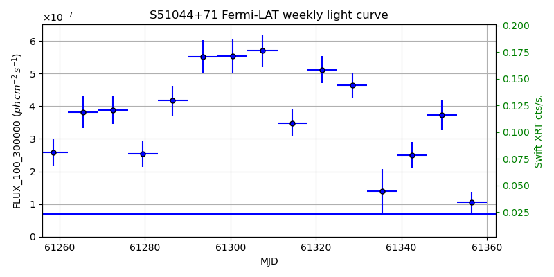
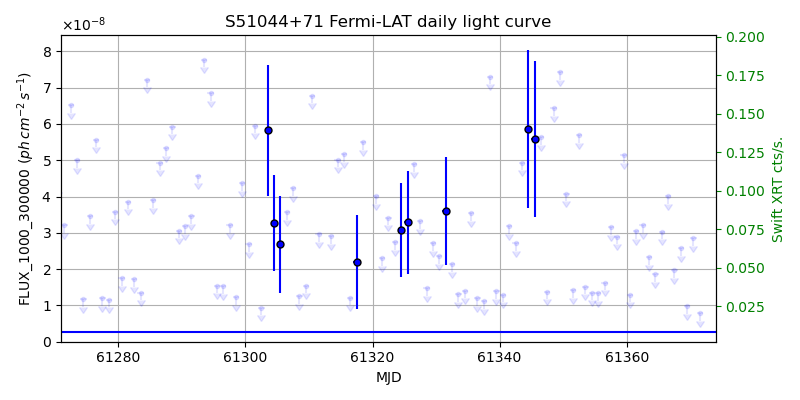
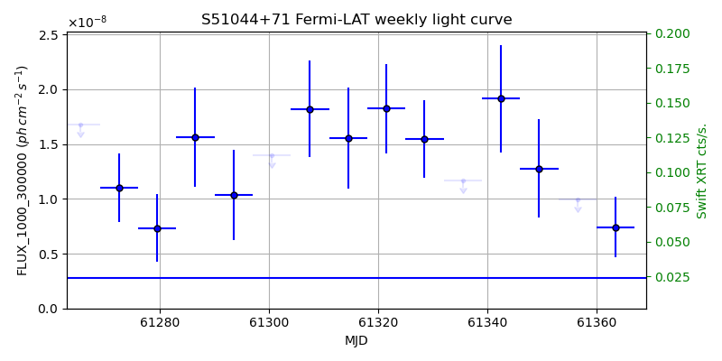

LAT Lightcurve site: https://fermi.gsfc.nasa.gov/ssc/data/access/lat/msl_lc/source/S5_1044p71
Swift site: https://www.swift.psu.edu/monitoring/source.php?source=S51044+71
NED: Query
Time of last update of this page: UT: 2026-11-28 16:22 (MJD: 61372.682)
| Property | Value |
|---|---|
| R.A. | 10:48:27.60 |
| Dec. | 71:43:37.2 |
| z | 1.150 |
| 3FGL SpectrumType | PowerLaw |
| 3FGL PL Index | 2.39 |
| 3FGL Flux_100_300000 | 6.90e-08 1 / (s cm2) |
| 3FGL Flux_1000_300000 | 2.80e-09 1 / (s cm2) |
| 3FGL Flux >200 GeV | 1.75e-12 1 / (s cm2) |
| 3FGL Extrap. Crab >200 GeV | 0.01 |
| 3FGL Flux After EBL Absorption >200GeV | 1.38e-14 1 / (s cm2) |
| 3FGL EBL Crab Fraction >200GeV | 0.00 |
| MJD | dMJD | Flux | dFlux | Frac3FGL | FracCrab>200GeV | EBLFracCrab>200GeV |
|---|---|---|---|---|---|---|
| 61367.50 | 0.50 | 2.71e-07 | 0.00e+00 | 0.00 | 0.00 | 0.00 |
| 61368.50 | 0.50 | 2.96e-07 | 1.06e-07 | 4.28 | 0.03 | 0.00 |
| 61369.50 | 0.50 | 3.19e-07 | 9.10e-08 | 4.62 | 0.03 | 0.00 |
| 61370.50 | 0.50 | 3.63e-07 | 0.00e+00 | 0.00 | 0.00 | 0.00 |
| 61371.50 | 0.50 | 3.04e-07 | 0.00e+00 | 0.00 | 0.00 | 0.00 |

| MJD | dMJD | Flux | dFlux | Frac3FGL | FracCrab>200GeV | EBLFracCrab>200GeV |
|---|---|---|---|---|---|---|
| 61335.50 | 3.50 | 1.40e-07 | 6.79e-08 | 2.03 | 0.02 | 0.00 |
| 61342.50 | 3.50 | 2.50e-07 | 4.07e-08 | 3.62 | 0.03 | 0.00 |
| 61349.50 | 3.50 | 3.74e-07 | 4.70e-08 | 5.42 | 0.04 | 0.00 |
| 61356.50 | 3.50 | 1.05e-07 | 3.16e-08 | 1.53 | 0.01 | 0.00 |
| 61363.50 | 3.50 | 1.33e-07 | 2.85e-08 | 1.93 | 0.01 | 0.00 |

| MJD | dMJD | Flux | dFlux | Frac3FGL | FracCrab>200GeV | EBLFracCrab>200GeV |
|---|---|---|---|---|---|---|
| 61367.50 | 0.50 | 1.98e-08 | 0.00e+00 | 0.00 | 0.00 | 0.00 |
| 61368.50 | 0.50 | 2.58e-08 | 0.00e+00 | 0.00 | 0.00 | 0.00 |
| 61369.50 | 0.50 | 9.71e-09 | 0.00e+00 | 0.00 | 0.00 | 0.00 |
| 61370.50 | 0.50 | 2.85e-08 | 0.00e+00 | 0.00 | 0.00 | 0.00 |
| 61371.50 | 0.50 | 7.94e-09 | 0.00e+00 | 0.00 | 0.00 | 0.00 |

| MJD | dMJD | Flux | dFlux | Frac3FGL | FracCrab>200GeV | EBLFracCrab>200GeV |
|---|---|---|---|---|---|---|
| 61335.50 | 3.50 | 1.17e-08 | 0.00e+00 | 0.00 | 0.00 | 0.00 |
| 61342.50 | 3.50 | 1.91e-08 | 4.89e-09 | 6.86 | 0.05 | 0.00 |
| 61349.50 | 3.50 | 1.28e-08 | 4.50e-09 | 4.58 | 0.03 | 0.00 |
| 61356.50 | 3.50 | 9.92e-09 | 0.00e+00 | 0.00 | 0.00 | 0.00 |
| 61363.50 | 3.50 | 7.42e-09 | 2.78e-09 | 2.66 | 0.02 | 0.00 |
--------------------------------------------------------- Using user-supplied coords: 10:48:27.60 71:43:37.2 2000 --------------------------------------------------------- FLWO UT night of: 2026-11-29 Local Sid. @ Midnight: 04:08 Sunset (-15.0) (local, UT): 18:31 01:31 Sunrise (-15.0) (local, UT): 05:53 12:53 Moonrise (local, UT): 21:57 04:57 Moonset (local, UT): Moon phase: 0.72 --------------------------------------------------------- AzTime LSID UT Obj_el Obj_az Mn_el Mn_az Sep. --------------------------------------------------------- 18:31 22:39 01:31 13.3 359.1 -32.9 32.1 55.9 19:01 23:09 02:01 13.4 1.5 -29.4 38.9 55.9 19:31 23:39 02:31 13.7 4.0 -25.4 45.0 55.9 20:01 00:09 03:01 14.3 6.3 -21.0 50.6 55.9 20:31 00:39 03:31 15.1 8.6 -16.2 55.6 55.9 21:01 01:09 04:01 16.2 10.8 -11.1 60.2 55.9 21:31 01:39 04:31 17.5 12.9 -5.4 64.5 55.9 22:01 02:09 05:01 19.0 14.8 0.4 68.5 56.0 22:31 02:39 05:31 20.7 16.5 5.8 72.2 56.0 23:01 03:10 06:01 22.6 18.1 11.6 75.8 56.0 23:31 03:40 06:31 24.7 19.4 17.5 79.4 56.0 00:01 04:10 07:01 26.9 20.4 23.6 82.9 56.1 00:31 04:40 07:31 29.1 21.2 29.7 86.5 56.1 01:01 05:10 08:01 31.5 21.7 35.8 90.3 56.1 01:31 05:40 08:31 33.8 21.8 42.0 94.4 56.2 02:01 06:10 09:01 36.2 21.6 48.1 99.1 56.2 02:31 06:40 09:31 38.5 21.0 54.2 104.7 56.3 03:01 07:10 10:01 40.8 20.0 60.1 111.7 56.3 03:31 07:40 10:31 42.9 18.5 65.6 121.1 56.4 04:01 08:10 11:01 44.8 16.6 70.5 134.7 56.5 04:31 08:40 11:31 46.5 14.2 74.0 154.7 56.6 05:01 09:11 12:01 47.9 11.4 75.2 181.1 56.6 05:31 09:41 12:31 49.0 8.2 73.6 206.8 56.7 05:53 10:02 12:53 49.6 5.8 71.0 221.2 56.8 --------------------------------------------------------- Source never above horizon of 55.0 deg. Dark hours >55 deg.: 0.00